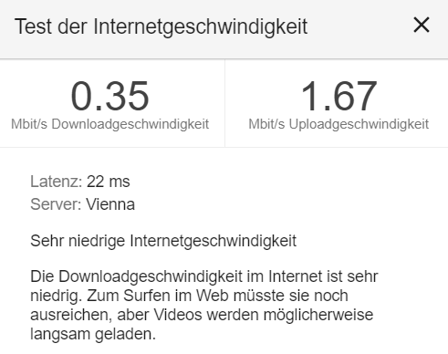

Seit gestern haben wir den neuen Tarif um 34,90 - den man automatisch neu nehmen musste. Die Geschwindigkeit sollte nun 70/14MB sein, aber bis jetzt gibt es keinen Unterschied zum alten Tarif um 29,90 mit 50/10MB. Haben gestern und heute zu verschiedenen Tageszeiten mehrmals die Geschwindigkeit getestet, es hat sich nichts geändert. Wird man nur abkassiert?
Bearbeitet von laikaDer neue Tarif könnte eine schlechter Verbindungsklasse haben.
Mein Internettarif wurde einfach gelöscht ein Unbekannter hat heute angerufen und den Vertrag gekündigt.
Warum geht Kündigen jetzt neuerdings telefonisch.
Ich habe es erfahren als ich ins Internet einsteigen wollte, nix ging und die Service Line angerufen habe
Quasi ein Hacker.
Die müssen doch sehen dass da irgendwer anruft und nicht ich. Muss nachvollziehbar sein wer anruft.
So was darf es nicht geben,
Das der Vertrag sich ändert wußte ich genau gar nicht!
vor 18 Stunden schrieb laika:Seit gestern haben wir den neuen Tarif um 34,90 - den man automatisch neu nehmen musste. Die Geschwindigkeit sollte nun 70/14MB sein, aber bis jetzt gibt es keinen Unterschied zum alten Tarif um 29,90 mit 50/10MB. Haben gestern und heute zu verschiedenen Tageszeiten mehrmals die Geschwindigkeit getestet, es hat sich nichts geändert. Wird man nur abkassiert?
Ich merke auch keinen Unterschied zum „alten“ Tarif.
Hallo @laika und @Hannes E.
danke für eure Beiträge.
Es tut mir leid zu hören, dass sich keine Verbesserung nach der Tarifänderung bemerkbar gemacht hat. So leid es mir tut, unsere Tarife sind immer mit "bis zu" Werten angeführt.
Ihr konntet keinerlei Veränderungen verstellen? Auch nicht beim Upload?
LG Andrea
Am 22.3.2019 um 16:23 schrieb laika:Seit gestern haben wir den neuen Tarif um 34,90 - den man automatisch neu nehmen musste.
Wurdest du schriftlich benachrichtigt? Meines Wissens muss der neue Tarif nicht genommen werden, dafür sollte es ja ein Sonderkündigungsrecht geben oder @-_Andrea?
Am 22.3.2019 um 16:23 schrieb laika:es hat sich nichts geändert. Wird man nur abkassiert?
Am 23.3.2019 um 11:11 schrieb Hannes E.:Ich merke auch keinen Unterschied zum „alten“ Tarif.
Im Idealfall sollte mindestens der Upload besser werden, außer er erreichte sonst auch nicht die zb. 10 mbit Upload-Geschwindigkeit
Hi @all!
Indie Router Einstellungen rein, profil Verwaltung und dann neues Profil erstellen - apn auf business.gprsinternet ändern!
Hallo @5igi3lue ,
genau, alle HomeNet-User, die von dieser Tarifumstellung betroffen waren, wurden sechs Wochen vor der Tarifumstellung postalisch über ein außerordentliches Kündigungsrecht informiert, weil die Änderungen nicht ausschließlich begünstigend waren.
LG Andrea
Willkommen in der Steinzeit

Hallo Rene,
es tut uns leid zu sehen, dass deine Werte inakzeptabel sind. Das soll natürlich keinesfalls so sein. Bitte melde dich bei den KollegInnen unter 0676-2000 und folge dem Menü mit der 3. So kommst du zu unserem HomeNet-Team, das die notwendigen Tools hat, um deinen Fall nachstellen und eine Kulanz erarbeiten zu können.
LG Andrea
Am 27.3.2019 um 19:33 schrieb 5igi3lue:
Im Idealfall sollte mindestens der Upload besser werden, außer er erreichte sonst auch nicht die zb. 10 mbit Upload-Geschwindigkeit
Bei mir das selbe Problem. Anscheinend wurde mein Tarif angepasst und dadruch sollte eine Donw Speed von BIS zu 80mbit haben .-) Was erreicht das lahm Netz gerade mal 4 Mbit down. HOtline anrufen kann man sich auch sofort in die Haare schmieren.
Am 27.3.2019 um 13:59 schrieb -_Andrea:Hallo @laika und @Hannes E.
danke für eure Beiträge.
Es tut mir leid zu hören, dass sich keine Verbesserung nach der Tarifänderung bemerkbar gemacht hat. So leid es mir tut, unsere Tarife sind immer mit "bis zu" Werten angeführt.
Ihr konntet keinerlei Veränderungen verstellen? Auch nicht beim Upload?
LG Andrea
Das einzige was sich bei mir geändert hat ist das das ich mehr bezahle für ein Downgrade bezahle. Sowas ist mir also auch noch nie passiert. Die Anpassung sollte doch eine Verbesserung bringen für den Kunden.
vor einer Stunde schrieb S1ckboy:Bei mir das selbe Problem. Anscheinend wurde mein Tarif angepasst und dadruch sollte eine Donw Speed von BIS zu 80mbit haben .-) Was erreicht das lahm Netz gerade mal 4 Mbit down. HOtline anrufen kann man sich auch sofort in die Haare schmieren.
vor einer Stunde schrieb S1ckboy:Das einzige was sich bei mir geändert hat ist das das ich mehr bezahle für ein Downgrade bezahle. Sowas ist mir also auch noch nie passiert. Die Anpassung sollte doch eine Verbesserung bringen für den Kunden.
Wurdest du schriftlich benachrichtigt? Meines Wissens muss der neue Tarif nicht genommen werden, dafür sollte es ja ein Sonderkündigungsrecht geben.
Am 4.4.2019 um 09:56 schrieb -_Andrea:Hallo Rene,
es tut uns leid zu sehen, dass deine Werte inakzeptabel sind. Das soll natürlich keinesfalls so sein. Bitte melde dich bei den KollegInnen unter 0676-2000 und folge dem Menü mit der 3. So kommst du zu unserem HomeNet-Team, das die notwendigen Tools hat, um deinen Fall nachstellen und eine Kulanz erarbeiten zu können.
LG Andrea
Hallo, die Angaben dass der maximale DL von 50 auf 70 Mbit erhöht wurden sind für mich ein Hohn. Abends schaffe ich meist nicht einmal 1 Mbit DL Gerade eben 0,56 Mbit!!. Der LTE Empfang wird mit 2 von 3 angezeigt. Von den 12 Mbit Upload hab ich nichts. Zu Spitzenzeiten, um 03:00 Uhr Morgens schaffe ich manchmal 5-6 Mbit DL. In den letzten 3 Jahren waren einmalig 22 Mbit das beste Ergebnis, das ich je erzielen konnte.
Als ich noch für "bis 50 Mbit" zahlten, schafften wir wenigstens 3-6 Mbit am Abend. Eine Tariferhöhung für eine Verschlechterung ist in meinen Augen eine echte Frechheit. Es sollte doch möglich sein, dass ich wenigstens 10% der Leistung, die ich voll bezahle, also 7 Mbit, auch zu Zeiten mit mehr Auslastung bekomme. "Fair Use" wäre für mich, wenn ich für 37,- EUR im Monat ein funktionierendes Netz hätte. Technische Ausfälle können zeitweise passieren, aber nicht als Dauerbetrieb. Ich glaubte euren Aussagen, dass nach der Umstellung die Geschwindigkeit erhöht werden würde, und bin schwer enttäuscht. Ich werde mich demnächst an die oben benannte Nummer wenden, und wenn keine deutliche Verbesserung möglich ist, werde ich das "Unbrauchbare Paket" kündigen.
MfG Manfred
Am 10.4.2019 um 21:26 schrieb 5igi3lue:
Wurdest du schriftlich benachrichtigt? Meines Wissens muss der neue Tarif nicht genommen werden, dafür sollte es ja ein Sonderkündigungsrecht geben.
ja das wurde ich schon. Da stand drinnen das ich dann BIS ZU 80 mbit download. habe. Mehr mbit/s hört sich gut an. Aber sollten lieber schreiben mehr kbit/s . So ne lahme Leitung haben sie ja nicht mal in den Anden.
@S1ckboy
Um das bewerten zu können wären noch weitere Angaben hilfreich.
Hast du auch Messungen in der Nacht oder am frühen Morgen?
Wie sieht dein Signalpegel aus?
Die Messungen hab i sowohl am Morgen Mittag Abend und der Nacht durchgeführt. Unter anderem mit speed test und diversen anderen. Dsd die Zeit hier ne Rolle spielt wann i denn test mache is e klar. Je mehr User online desto schwieriger is es n guten Wert zu erreichen. Jedoch hat das kaum was damit zu tun das i tageweise eben mal 1 MBit erreiche
Am 10.4.2019 um 21:26 schrieb 5igi3lue:
Wurdest du schriftlich benachrichtigt? Meines Wissens muss der neue Tarif nicht genommen werden, dafür sollte es ja ein Sonderkündigungsrecht geben.
Danke. Ja das wurde ich. Dachte eben das die Leitung schneller wird aber weit gefehlt.
vor 3 Stunden schrieb S1ckboy:Die Messungen hab i sowohl am Morgen Mittag Abend und der Nacht durchgeführt. Unter anderem mit speed test und diversen anderen. Dsd die Zeit hier ne Rolle spielt wann i denn test mache is e klar. Je mehr User online desto schwieriger is es n guten Wert zu erreichen. Jedoch hat das kaum was damit zu tun das i tageweise eben mal 1 MBit erreiche
Ok, also nie wirklich gute Werte oder?
Wenn 1Mbit Dauerzustand ist, dann bin ich nicht sicher, ob das nur Überlastung beim Sender ist. Wie sieht der Signalpegel aus?